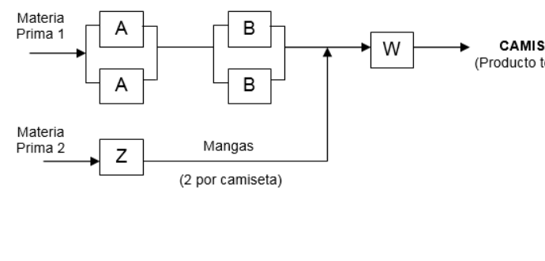

La empresa “UDP” se dedica a elaborar camisetas de fútbol para el equipo más popular del país. La distribución actual se presenta a continuación:
(Gráfica de la distribución)
En el proceso Z se elaboran las mangas para la camiseta, por lo que se necesitan dos mangas por cada camiseta. Las mangas y la camiseta se terminan de coser en el proceso W. La información sobre capacidad (para cada máquina) se muestra a continuación:
Máquina Capacidad de Diseño (unid/hora) A 3 B 4 Z 10 W 3
La empresa trabaja un turno de 8 horas diarias, 25 días al mes, 12 meses al año. El proceso actual tiene una eficiencia de 95% y no se presentan unidades defectuosas. La demanda actual es el 80% de la capacidad de producción instalada. Para preparar una orden de compra o de producción se gastan 25 soles. Mantener una camiseta en inventario durante un mes representa un costo de 1% respecto al costo de producción de la camiseta, que actualmente es de 50 soles.
¿Cuál será la cantidad más conveniente a producir para cumplir con la demanda? Sustente su respuesta.
Si para preparar el proceso antes de empezar a elaborar un lote se requieren 3 días, ¿cuál será el punto en que se debe colocar una nueva orden de producción?
La empresa ”MATUTE” le ha hecho una propuesta al gerente general de UDP. Según el señor Alarcón, Gerente General de MATUTE, ellos pueden abastecerlos del producto a un costo de 45 soles por unidad, siempre y cuando, le compren lotes de 500 unidades cada vez.
Analice la propuesta del señor Alarcón y decida cuál es la opción más conveniente para UDP. Sustente su respuesta.

Distribución de Planta UDP
32.2 Datos identificados
Símbolo | Significado | Valor | Unidad |
|:—:|—|:—:|—|| Cap. A | Capacidad Máquina A | 3 | unid/hora | | Cap. B | Capacidad Máquina B | 4 | unid/hora | | Cap. Z | Capacidad Máquina Z | 10 | mangas/hora | | Cap. W | Capacidad Máquina W | 3 | unid/hora | | Turno | Horas laborables | 8 | horas/día | | Días | Días laborables al año (\(25 \times 12\)) | 300 | días/año | | Eficiencia| Eficiencia del sistema | 95% | | | \(S_{prod}\) | Costo de ordenar/preparar | 25 | soles/lote | | \(C\) | Costo de producción | 50 | soles/unidad | | \(i_{mes}\) | Tasa de mantenimiento mensual | 1% | mensual | | \(LT\) | Lead time de preparación | 3 | días |
32.3 Supuestos de trabajo
La máquina Z hace mangas. Se requieren 2 mangas por camiseta. Capacidad efectiva de Z en camisetas = \(10 / 2 = 5 \text{ camisetas/hora}\).
El cuello de botella de la línea es la máquina o etapa más lenta. Al ver las capacidades (3, 4, 5, 3), la capacidad máxima de diseño del sistema está limitada a 3 camisetas/hora (Dada por A o W, indistintamente si están en serie o paralelo, el máximo flujo es 3 u/h).
32.4.2 a. Cantidad más conveniente a producir (EPQ)
\[ EPQ = \sqrt{\frac{2DS}{H \left(1 - \frac{D}{P}\right)}} \] Como \(D = 0.8P\), entonces \((1 - D/P) = 0.2\). \[ EPQ = \sqrt{\frac{2(5472)(25)}{6(0.2)}} = \sqrt{\frac{273600}{1.2}} = \sqrt{228,000} \approx 477.49 \text{ unidades} \] La cantidad más conveniente a producir es 477 unidades por lote.
32.4.3 b. Punto de pedido (ROP)
\[ ROP = d \times LT = 18.24 \text{ unid/día} \times 3 \text{ días} = 54.72 \approx 55 \text{ unidades} \] Se debe colocar la nueva orden cuando el inventario caiga a 55 unidades.
32.4.4 c. Análisis de la propuesta “MATUTE”
Propuesta de MATUTE: Comprar a \(C_{compra} = 45\) soles/unidad en lotes fijos de \(Q_m = 500\) unidades. El costo de mantenimiento de unidades compradas es: \(H_{compra} = 45 \times 0.12 = 5.4 \text{ soles/unid-año}\).
Comparamos los Costos Totales Anuales (relevantes más producto):
Costo Total de Producción Interna (\(TC_{UDP}\)):\[ TC_{UDP} = (D \times C) + \left(\frac{D}{EPQ}\right)S + \left(\frac{EPQ}{2}\right)H\left(1-\frac{D}{P}\right) \]\[ TC_{UDP} = (5472 \times 50) + \left(\frac{5472}{477.49}\right)25 + \left(\frac{477.49}{2}\right)6(0.2) \]\[ TC_{UDP} = 273,600 + 286.50 + 286.49 = \mathbf{274,172.99 \text{ soles/año}} \]
Conclusión: La opción más conveniente para UDP es aceptar la propuesta del señor Alarcón y comprar a MATUTE. Al tercerizar la obtención de las camisetas, UDP lograría un ahorro anual de 26,309.39 soles.